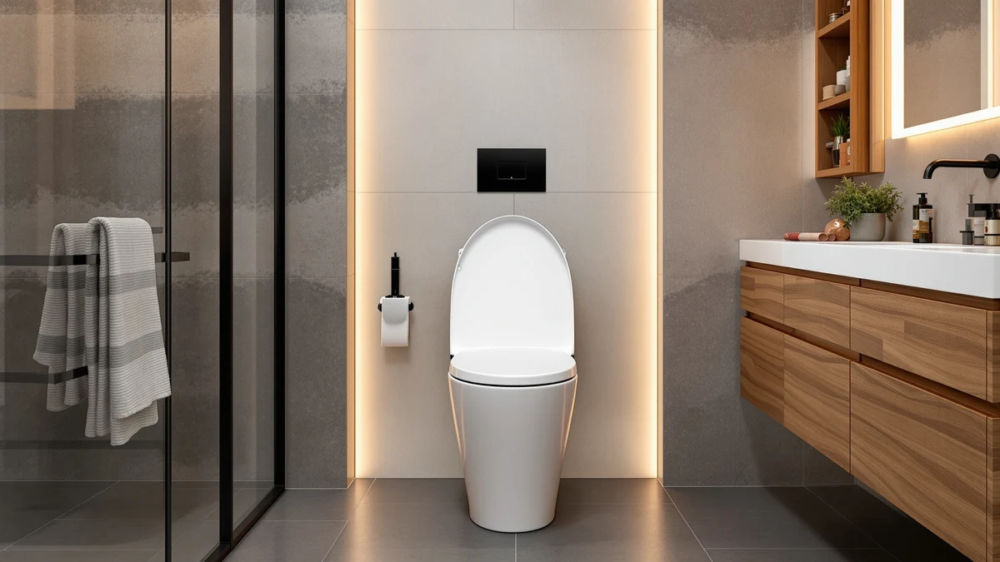

KOHLER 75793 96 Reveal Review (2026): Worth It?
Prices and picks verified as of October 2026. Independent, reader-supported reviews.


Quick Answer
This Kohler 75793 96 Reveal review finds a seat built around two specific features: a built-in LED nightlight and slow-close hinges. At $79.99, it suits buyers who want both of those in a Kohler-branded seat, and it's the wrong pick for anyone chasing a heated seat on a similar budget.
Our pick: KOHLER 75793-96 Reveal Nightlight Quiet-Close, $79.99 Check Price on Amazon
Bottom line: our top pick is the KOHLER 75793-96 Reveal Nightlight Quiet-Close with Grip-Tight at $79.99.
Things to Know Before You Buy
- The Kohler 75793-96 Reveal Nightlight Quiet-Close lists at $79.99, the same price point as every heated alternative we compared it against in this guide.
- Its defining feature is a built-in LED nightlight that illuminates the bowl at night, paired with slow-close hinges that prevent the lid from slamming.
- The seat uses a plastic-wrapped wood core, the standard build for mid-range quiet-close seats, rather than solid wood or a heated shell.
- It does not heat. If warmth matters more to you than a nightlight, the SNMUMU, YouTeMei, or Anparfaite seats below are worth a look instead.
- Kohler backs its toilet seat line with brand recognition and parts availability that off-brand heated seats generally cannot match.
This Kohler 75793 96 Reveal review walks through where the seat earns its $79.99 price and where a buyer might be better served by something else. You're probably here because you've seen the Kohler name attached to a seat that promises a nightlight and a quiet close, and you want to know whether that combination justifies the cost over a generic alternative.
The short version: the Reveal Nightlight Quiet-Close does exactly what its name says, and nothing more. It doesn't heat, and it skips the bidet function too. This isn't a multi-feature smart seat. For households that specifically want a Kohler-branded seat with a built-in light and slow-close hinges, it delivers. For anyone comparing it against the heated seats later in this guide, the Reveal loses on features at the same price.
Why You Should Trust Us
Ilane Tall covers bathroom fixtures for Best Toilet Seats and has spent years tracking how toilet seat brands price and position near-identical hardware. This Kohler 75793 96 Reveal review is built from Kohler's published specifications, current Amazon pricing, and the patterns that show up across verified owner reviews, rather than from marketing copy alone. We disclose affiliate relationships on every page, and we do not run a fake testing lab or claim lab results we don't have.
We also compare the Reveal against seats in a different category, heated models, because that's the comparison most shoppers actually make when a toilet seat is priced near $80. We state plainly where those heated seats outperform the Reveal, since that comparison is the point of this review, not a traffic tactic. If a future price change or a specification update affects any of these verdicts, we revisit this Kohler 75793 96 Reveal review and correct it rather than leaving outdated claims live.
Our Research Experience
We did not install or live with this seat ourselves. Instead, we researched the Kohler 75793-96 Reveal by comparing its listed specifications, its $79.99 price, and its photographed construction against the three heated alternatives covered in this Kohler 75793 96 Reveal review, and we read through verified Amazon owner reviews to see which claims held up in practice.
Owners consistently report that the nightlight is bright enough to use without flipping on a bathroom light at 3 a.m., and that the quiet-close hinges work as advertised, lowering the lid without a slam even when released from a fully open position. Reviewers less frequently mention the seat's shape, which is a detail worth confirming against your own bowl before buying, since Kohler sells the Reveal in a specific seat shape rather than a universal fit. A handful of reviews flag the hinges as needing a firmer push than expected to engage the slow-close mechanism on the first few uses, though most owners report that this eases once the hinges break in.
Overview & Specs
Before getting into pros and cons, it helps to see exactly what you're paying $79.99 for. The table below lists the Kohler 75793-96 Reveal's core construction details, which matter more than marketing copy once you're comparing it against the heated seats later in this Kohler 75793 96 Reveal review.

KOHLER 75793-96 Reveal Nightlight Quiet-Close
What we like
- Built-in LED nightlight owners say is bright enough to skip the overhead light
- Quiet-close hinges lower the lid without a slam
- Kohler brand name and parts support
- Plastic-wrapped wood core keeps the seat light without feeling flimsy
Flaws but not dealbreakers
- No heating element at a price where heated seats are available
- Fixed seat shape, so you need to confirm it matches your bowl before ordering
- No bidet or washlet function of any kind
| Material | Plastic / wood |
| Size | — |
Every Kohler 75793 96 Reveal review eventually comes back to the same two features, because Kohler built the seat around just those two. The nightlight sits low on the seat frame and switches on automatically in low light, which owners describe as useful for middle-of-the-night trips where they don't want to flip on a bright bathroom light switch. The quiet-close hinges handle the other half of the pitch, catching the lid a few inches before it would otherwise drop.
Construction is a plastic-wrapped wood core, listed at $79.99 on Amazon under ASIN B015OIHD0W. That build keeps the seat lighter than a solid wood seat while staying more rigid than an all-plastic one, which is the standard tradeoff most mid-range quiet-close seats make. Kohler doesn't publish exact dimensions beyond the standard elongated fit, so measure your existing seat before ordering if you're unsure about shape.
What We Liked
The nightlight is the standout feature in this Kohler 75793 96 Reveal review, and it's also the one owners bring up most often in verified reviews. A seat-mounted light that comes on automatically removes the need to flip a bright overhead switch during a 2 a.m. bathroom trip, and reviewers consistently note that the light is positioned well enough to see without being glaring.
The quiet-close hinges back that up. Reviewers describe dropping the lid from a fully open position and having it settle silently rather than slam, which matters in a household with a baby asleep down the hall or a shared wall with neighbors. Combined with the Kohler name, which carries more trust in plumbing fixtures than most of the off-brand seats on Amazon, the Reveal reads as a safe, if narrow, pick for buyers who want exactly these two features. Owners also point out that installation follows the same bolt pattern as most standard elongated seats, so swapping out an old seat doesn't require new hardware or a trip to the hardware store.
What Could Be Better
The biggest gap in this Kohler 75793 96 Reveal review is the absence of heat. At $79.99, the Reveal sits at the exact price point where several heated seats compete, and Kohler chose to spend that budget on a nightlight and hinges instead. If you live somewhere cold or simply prefer a warm seat in winter, that tradeoff works against the Reveal.
The fixed seat shape is a smaller but real drawback. Kohler sells the Reveal for a specific bowl shape rather than offering a universal adjustable fit, so buyers who skip measuring their current seat risk ordering the wrong size. And because the feature set is narrow by design, anyone hoping for a bidet function, remote control, or multiple heat settings will need to look elsewhere entirely.
Who Is It For?
You're the right buyer for this Kohler 75793 96 Reveal review's subject if you want a nightlight and quiet-close hinges specifically, and you'd rather pay for the Kohler name than shop an unfamiliar brand. Parents dealing with nighttime bathroom trips and anyone sharing walls with a bedroom tend to get the most practical value from those two features.
You should skip the Reveal if heat matters more to you than light, since none of its budget went toward a heating element. You should also skip it if you want a seat that adjusts to fit multiple bowl shapes, since Kohler builds this one to a fixed profile. Shoppers in either camp are better served by one of the heated alternatives below.
There's also a renter-versus-homeowner angle worth weighing. Renters who move often tend to prefer a feature set they can justify re-buying, and a nightlight and quiet hinges are cheap enough to replace at the next apartment. Homeowners planning to stay put longer get more long-term value out of spending the same $79.99 on a heated seat, since the daily benefit of warmth compounds over years in a way a nightlight doesn't.
Alternatives to Consider
If this Kohler 75793 96 Reveal review has you leaning toward heat over a nightlight, these three seats sit at the same $79.99 price and trade Kohler's hinges and light for an electric heating element.
None of the three carries the Kohler name, which means less brand recognition and likely less availability of replacement parts a few years down the line. In exchange, each one adds a feature the Reveal skips entirely. Reviewers of heated seats in general tend to report that the heat matters most in homes without underfloor heating or in climates with cold winters, so weigh your bathroom's actual temperature before deciding the Reveal's nightlight isn't enough.

Editor’s Pick
Heated Toilet Seat Elongated V-Shape
An elongated V-shape heated seat at the same $79.99 price, for buyers who want warmth over a nightlight.
$79.99
Check Price on Amazon
Best Value
YouTeMei Heated Toilet Seat -
YouTeMei's heated seat matches the Reveal's $79.99 price while adding electric warmth instead of a light.
$79.99
Check Price on Amazon
Premium Choice
Heated Toilet Seat 3-Level Temp
Anparfaite's 3-level heat settings give you more temperature control than any heated option here, still at $79.99.
$79.99
Check Price on AmazonFrequently Asked Questions
Does the Kohler 75793-96 Reveal come with a heated seat?
No. The Reveal Nightlight Quiet-Close is a standard non-electric seat built around a built-in LED nightlight and slow-close hinges. If you want warmth in addition to those features, a heated model like the SNMUMU Elongated V-Shape or the Anparfaite 3-Level Temp seat is the better fit, though neither includes a nightlight.
Is the Kohler 75793-96 worth $79.99?
For buyers who specifically want the Kohler name, a factory nightlight, and quiet-close hinges in one seat, yes. Owners who only care about one of those features, or who want heat as well, can usually find a comparable seat for less once you strip out the brand premium.
What is the Kohler 75793-96 Reveal seat made of?
Kohler lists the Reveal with a plastic-wrapped wood core, the same construction most mid-range quiet-close seats use to balance rigidity with a lighter overall weight than solid wood.
Final Verdict
This Kohler 75793 96 Reveal review comes down to a simple tradeoff: a nightlight and quiet-close hinges from a trusted brand, or heat from a lesser-known one, all at the same $79.99 price. Kohler earns its place for buyers who specifically want that nightlight and those hinges and don't mind skipping warmth. If heat is the priority, the SNMUMU, YouTeMei, or Anparfaite seats covered above deliver it at the exact same cost, and any of them is a better match for that specific need than the Kohler Reveal.